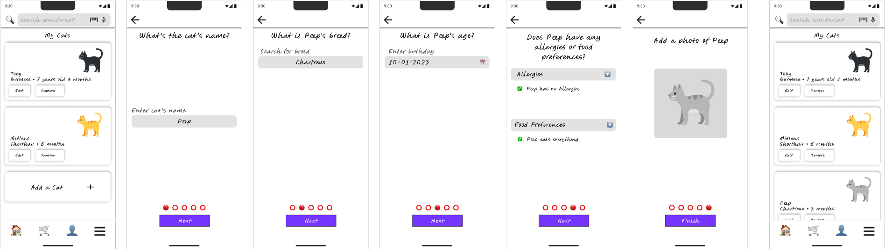
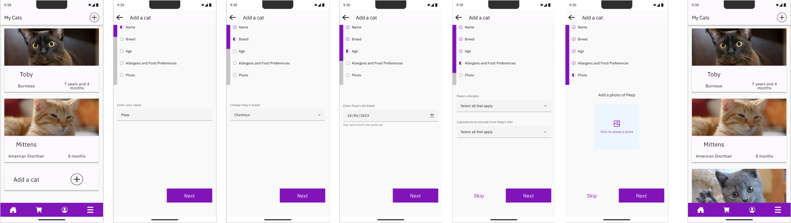
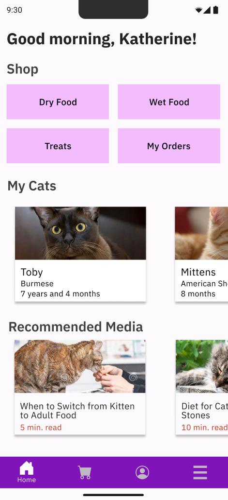
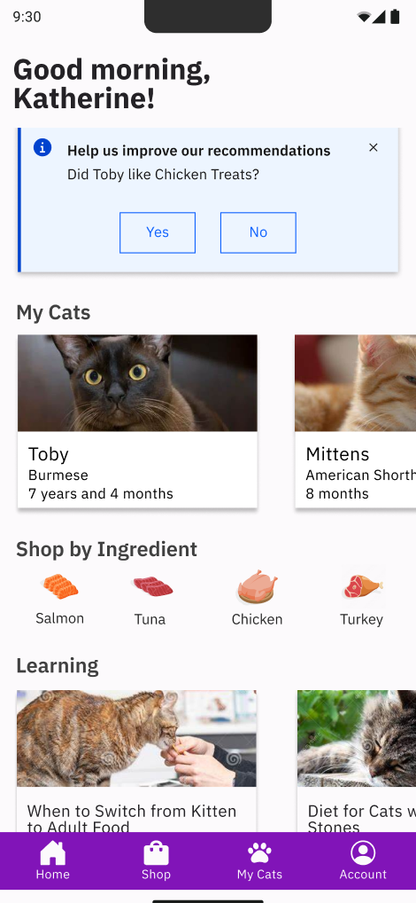
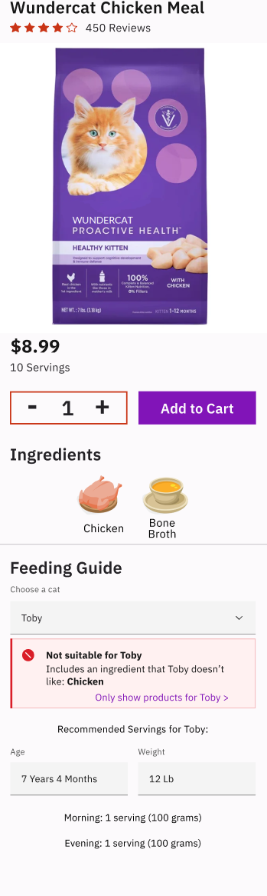

Overview
Wundercat is a mobile app designed to simplify the cat food shopping experience, specifically tailored for cat parents dealing with picky eaters or those with dietary restrictions. By addressing the unique challenges faced by cat owners, Wundercat aims to redefine the way we care for our feline companions.
My Role
For this project, I worked independently, taking on multiple roles throughout the design process. From initial concept ideation to final implementation, I was responsible for every stage of the project's development. My role encompassed:
- Conducting user research to understand user needs and pain points.
- Defining project goals and objectives based on research insights.
- Creating user personas and scenarios to guide the design process.
- Developing wireframes, prototypes, and user flows to visualize design concepts.
- Iteratively testing designs with potential users to gather feedback and make improvements.
- Conducting usability testing to validate the effectiveness of the final product.
Research
I began my research by visiting various cat food retailer websites to understand the information they provide on their product page. It became apparent that while some offered extensive details, others lacked sufficient information. Recognizing the importance of striking a balance, I aimed to find a middle ground. Too much information could overwhelm potential customers, while too little could leave them uninformed.
Additionally, I researched the dietary needs of cats and observed that many commercial foods contain ingredients unsuitable for obligate carnivores like cats. Despite their natural carnivorous diet, numerous products include grains and plant-based ingredients.
After conducting this research, I gained a clearer understanding of the questions to pose to survey participants. The aim of the survey was to determine the key information an individual seeks when buying cat food and ensure the design remained focused on addressing these aspects.
To conduct my survey I created a poster and posted this across town. People love cat memes so having a slightly funny poster depicting a cat would be a perfect way to grab people's attention.
Based on the survey responses, a large majority of participants emphasized that the most important nutritional information they look for in pet food is the ingredients list. This shows that pet owners value transparency and want clear, accessible details about what’s in the food they’re purchasing. Making ingredients information easy to find and understand is crucial for helping users feel confident in their decisions.
While most participants tended to lean on access to nutritional information being easy to find, a few of the of the written responses stated it can be difficult to disseminate the information. This is a common issue with many products, especially when it comes to pet food.
Design Process
The Cat Manager
I decided that personalizing the experience based on individual cats would be the best approach. To ensure all cats are considered, we need to account for both factual information (like age and weight) and dietary preferences (like preferred flavors or types of food). The solution was to create individual profiles for each cat, allowing for more tailored product recommendations.
Low-Fi Prototype: "Adding a cat"
After finalizing the prototype it was sent to a small group of survey participants that had agreed to try it out. After receiving their feedback I made some changes and landed on a final flow.
High-Fi Prototype: "Adding a cat"
The Home Screen
For the home screen, I wanted to make it easy for users to seamlessly navigate between shopping, viewing their cat profiles, and learning more about their cats. My goal was to create a user-friendly layout that highlights these key features, ensuring that users can quickly find what they need without any hassle.
Home Screen - First Iteration
Home Screen - Second Iteration
For my second iteration I decided to add a notification on the home screen that would help expand on a pet's profile. For example, if a new product is purchased, it can be added as a prefer food or avoided food directly from the homescreen, depending on the user's response. Additionally The Navigation Bar was simplified with 'My Cats' being accessible without toggling the hamburger menu.
The Product Page
The product page was designed based on features users expressed interest in during the initial survey. It includes a clear, at-a-glance ingredients list, a compatibility guide tailored to each cat's profile, and recommended serving sizes to ensure proper nutrition.
Product Page Mockup
Outcome
The final design was received well by the few participants that were able to test it. They expressed that the final prototype was easy to navigate and that the information was easy to find. While this was a small group of participants, I believe that the design is on the right track. During this exercise I learned a lot about UX Researching as it was my first case study I focused on talking to real people who were not fellow design students.